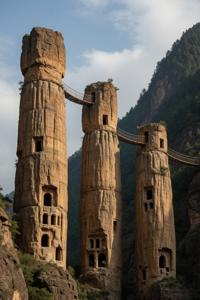

Клыков монастырь
{kind=link}

Клыков монастырь (згур. и дегл.: Klykov monastyr; глаг.: ⰍⰎⰬⰍⰑⰂ ⰏⰑⰐⰀⰔⰕⰬⰓ) — католический монастырский комплекс в Бывшей Верхней Паннонии, расположенный на скалах-останцах над долиной Южной Дравы.
Клыци («Клыки») — три совершенно отвесных песчаниковых столба-останца, каждый около 20 метров в диаметре и высотой 120–150 метров. Они стоят в ряд, отделённые промежутками в 15–20 метров друг от друга и от крутого, поросшего сосняком склона Лубовинчей горы (Lubovincza Gora, букв. "Гора черепа"). Между собой останцы соединены верёвочными мостами. Считая от горы, столбы носят имена Сына, Отца и Святого Духа.
Основание
Согласно преданию, первым на скале Святого Духа в VI веке поселился св. Геон Столпник — византийский монах-отшельник. В последующие десятилетия вокруг него сложилась монашеская община. Первоначальный устав запрещал любые инструменты: первые монахи выскребали себе кельи-ниши и ступени голыми руками, и лишь много позднее им разрешили деревянные и каменные орудия. Пищевые правила были ещё строже: монахи питались лишь тем, что давали сами скалы — мхом, насекомыми и птичьим помётом. Со временем были смягчены и эти предписания.
Средние века
В X веке монастырь стал прибежищем для духовенства глаголической традиции, принесённой в Паннонию славянами из Великой Моравии. Когда в 1040 году святой Тибор, первый епископ Брегово, ввёл латинский обряд и запретил глаголическое богослужение, Клыков остался единственным исключением: монастырь ссылался на Decretum Ioannis — папскую грамоту, якобы дарованную в IX веке и наделявшую его вечной автономией. Бреговские епископы веками оспаривали подлинность этого документа, но местные бароны, враждебные бреговской кафедре, поддерживали монастырь и тем самым сохраняли славянский обряд. К XI веку комплекс разросся в обширную систему рукотворных пещер, вмещавшую десятки монахов: выскребленные в скале лабиринты келий, часовен, церквей, спален, трапезных и кладовых общей протяжённостью около 500 метров. В 1060 году монастырь принял бенедиктинский устав.
Святой Нектарий (1267–1339, аббат с 1310 года) прославился как собиратель рукописей и покровитель переписчиков; в народных легендах он фигурирует как великий чернокнижник, способный повелевать демонами. Монастырь материально обеспечивали окрестные крестьяне, а также короли и бароны своими пожертвованиями. Он никогда не прекращал существовать, хотя порой — особенно в османскую эпоху — число монахов сокращалось до одного.
Глифолатрия
Чтобы оправдать свою приверженность глаголице, клыковские монахи разработали то, что сами называли «буквенным учением» — эзотерическую практику, напоминающую каббалу. Считалось, что каждая глаголическая буква воплощает одну из граней Божества, а их сочетания несут мистический смысл. Учение предписывало особые молитвы, состоящие из названий букв («аз», «буки» и так далее), которые читали в порядке, не имевшем явного смысла. В сочетании со строгим аскетизмом эта практика, как считалось, развивала чудотворные способности и вела к святости. В 1509 году папский указ осудил это учение как глифолатрию — почитание знаков, — однако в Клыкове его продолжали практиковать вплоть до XIX века, а то и позже.
Новое время
Исследования Эньо Жлутоводого привлекли к Клыкову широкое внимание: Жлутоводый презентовал монастырь как памятник славянского национального наследия. С середины XIX века обители покровительствовали деятели Славянского Возрождения. Вилмош Комаровицкий, выдающийся композитор, провёл здесь монахом свои последние годы.
При коммунистическом режиме численость братии постепенно сокращалось, поскольку власти не допускали пострижения новых монахов. К 1990 году лишь два престарелых монаха оставались в монастыре. Тем не менее власти признавали Клыков памятником национального наследия: в 1960-е и 1970-е годы здесь провели обширные исследования и опубликовали всё собрание рукописей.
Современное состояние
Библиотека насчитывает около 500 томов, в основном богослужебных. Легенды о тайных комнатах с запрещённой глифолатрической литературой не подтвердились. Сейчас в монастыре живут десять монахов; их легко отличить по чёрным бенедиктинским рясам и чёткам с глаголическими буквами. По уставу Клыкова, постриженным монахам запрещено покидать скалы, поэтому их редко видят вблизи. Туризм не поощряется: допускается только паломничество, и то в строго ограниченных пределах.
Категории: Католицизм, Населённые пункты